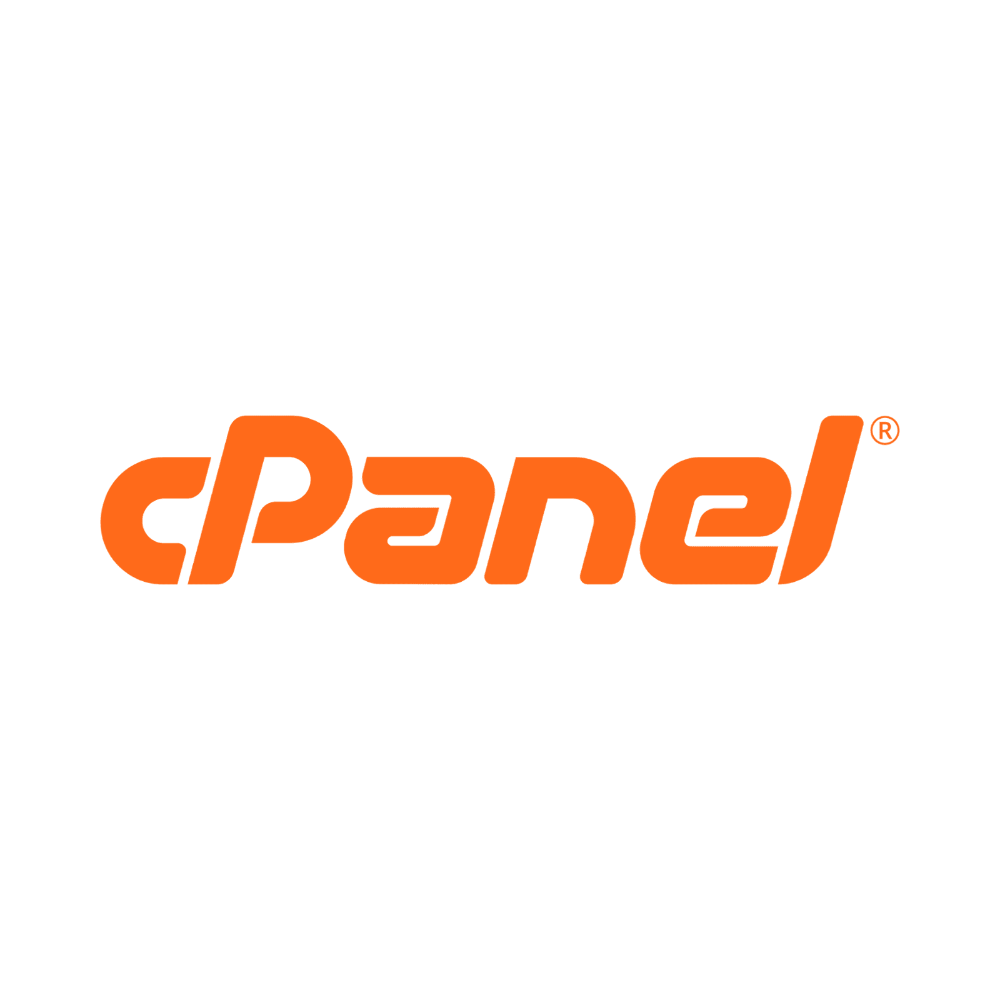
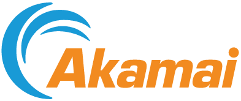
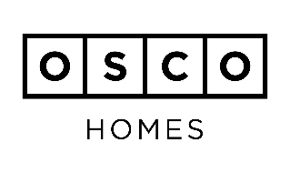
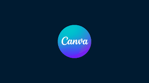
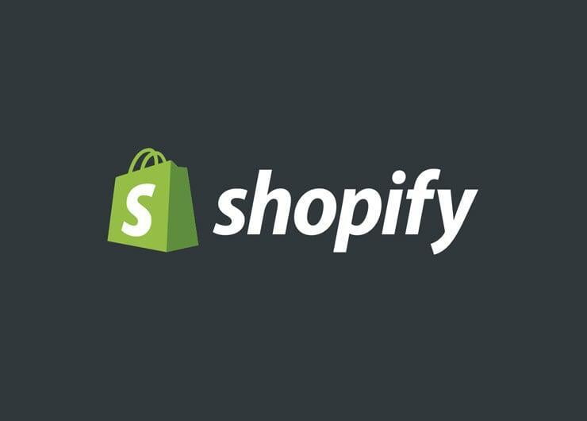
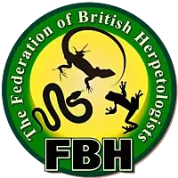
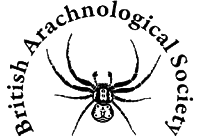

cPanel
cPanel provides website and server management tools used across the hosting world, making it easier to run and maintain web services.
Who sponsors us
These logos represent organisations that support, power or partner with APES. Together they help strengthen digital tools, community relationships, practical delivery and public-facing work.
Technology, commerce and service organisations helping power parts of the wider APES ecosystem.

cPanel provides website and server management tools used across the hosting world, making it easier to run and maintain web services.

Akamai is known for cloud computing, content delivery and cybersecurity services that help protect and power digital experiences online.

OSCO Homes is associated with off-site housing and construction work, reflecting practical, build-focused support around community infrastructure.

Canva is a design platform that helps teams create quick graphics, campaigns, printed materials and visual communications.

Shopify is a commerce platform used by businesses to sell online and in person, bringing storefront, payments and operational tools together.
Organisations named in partnership with APES across the site footer and supporter messaging.

Merseyside Police is the territorial police force serving Merseyside, and its partnership presence underlines practical community-facing collaboration.

The Federation of British Herpetologists brings together UK reptile and amphibian keeping interests, welfare knowledge and sector representation.

The British Arachnological Society encourages interest, recording and education in arachnology, including spiders and other arachnids.
Visible partnerships and supporters help show the wider community around APES. They also make it easier for visitors to understand the mix of welfare, education, public-sector and technical support behind the organisation.